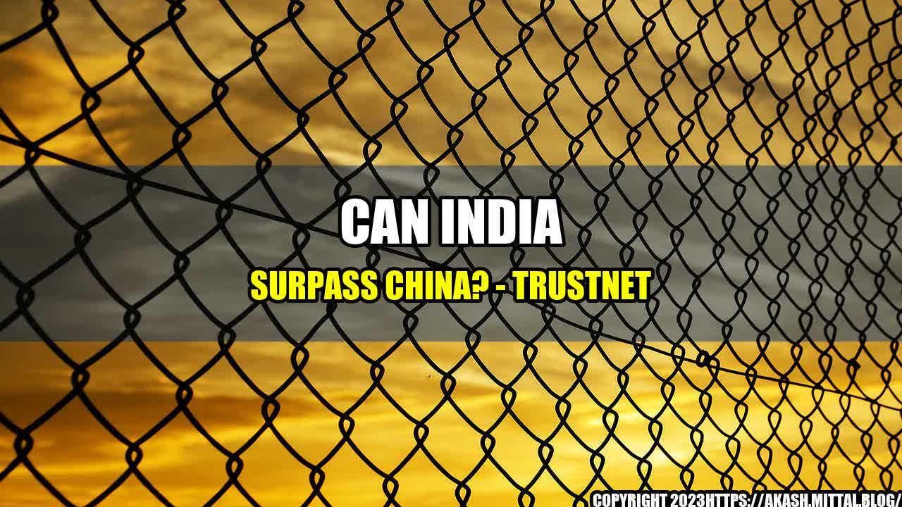

Can India Surpass China?

India and China, together, make up more than one-third of the world's population, and their economic growth in recent years has been nothing short of impressive. While China has been the global leader in terms of economic growth and development, India has been catching up fast and is currently the fastest-growing major economy in the world. The question on everyone's mind is whether India can surpass China in the future.
In the early 2000s, China and India were at similar levels of economic development. However, while China aggressively pursued economic growth and development, India did not. As a result, China quickly overtook India and became the global leader in terms of economic growth and development. Today, India is playing catch-up and trying to close the gap with China.
Examples and Case Studies
- GDP Growth: India's GDP has been growing at an average rate of around 7% per year over the past decade, while China's GDP growth has been slowing down and is currently at around 6%. If India can sustain its growth rate, it could overtake China as the world's fastest-growing major economy in the near future.
- Manufacturing: China is currently the world's largest manufacturer and exporter, but India is making strides in this area. The Indian government's "Make in India" initiative, which aims to promote manufacturing in India, has attracted foreign investment and helped boost the country's manufacturing sector.
- Information Technology: India is already a major player in the global IT industry and has a strong advantage in terms of educated and skilled workforce. Many companies, including Google and Microsoft, have set up operations in India to take advantage of its IT talent pool.
- Services Sector: India's services sector, which includes IT, finance, healthcare, and education, is already a major contributor to the country's economy. The sector is expected to continue growing, with the potential to overtake China in terms of services exports and contribute significantly to India's GDP.
- India has been catching up fast and is currently the fastest-growing major economy in the world.
- If India can sustain its growth rate, it could overtake China as the world's fastest-growing major economy in the near future.
- India has advantages in areas such as manufacturing, information technology, and services, which could help the country close the gap with China and eventually surpass it.
India still has a long way to go before it can surpass China, but the country's progress in recent years is encouraging. With the right policies and investments, India could become a major player in the global economy and bring significant benefits to its people.
Hashtags: #IndiaVsChina #EconomicDevelopment #MakeInIndia #IT #ServicesSector #GDPGrowth #GlobalEconomy
Category: Economics
Curated by Team Akash.Mittal.Blog
Share on Twitter Share on LinkedIn